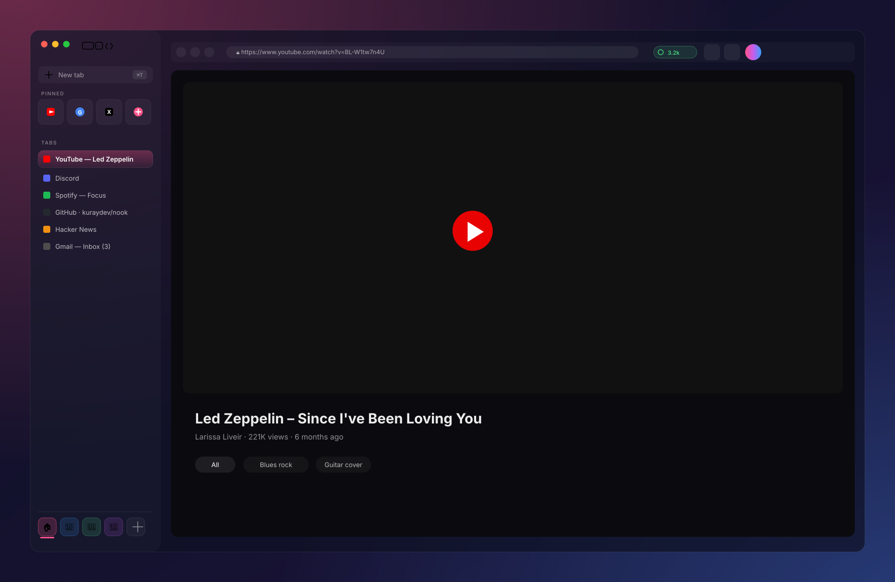
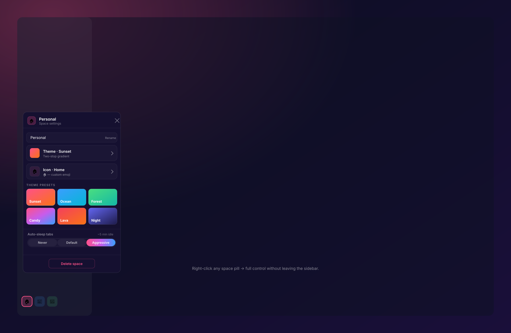
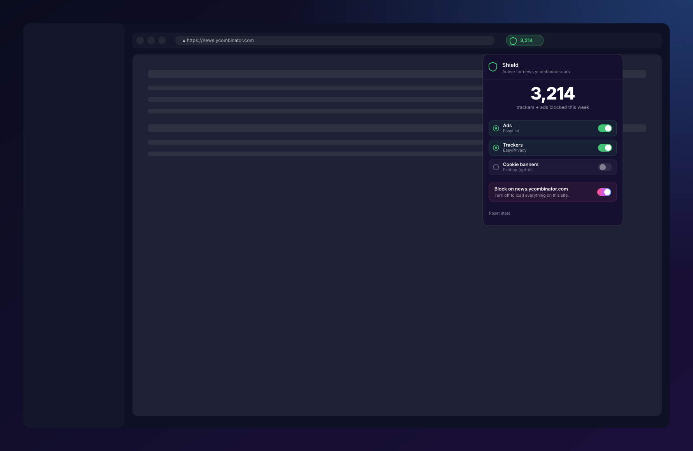
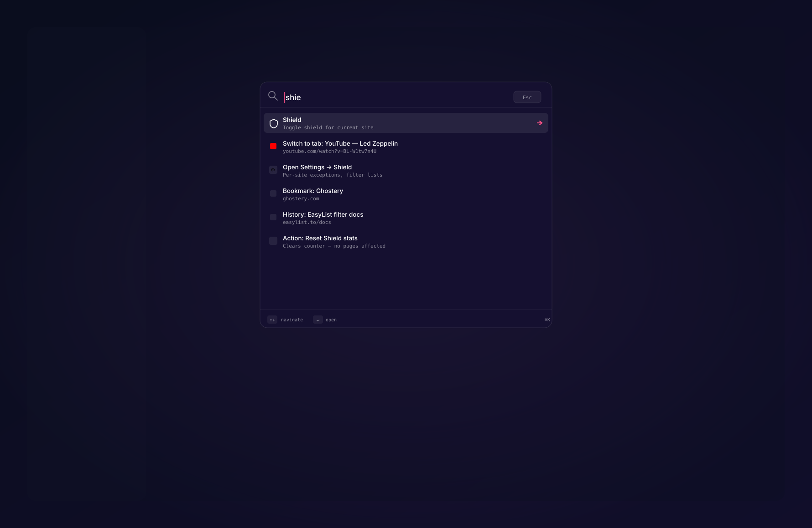
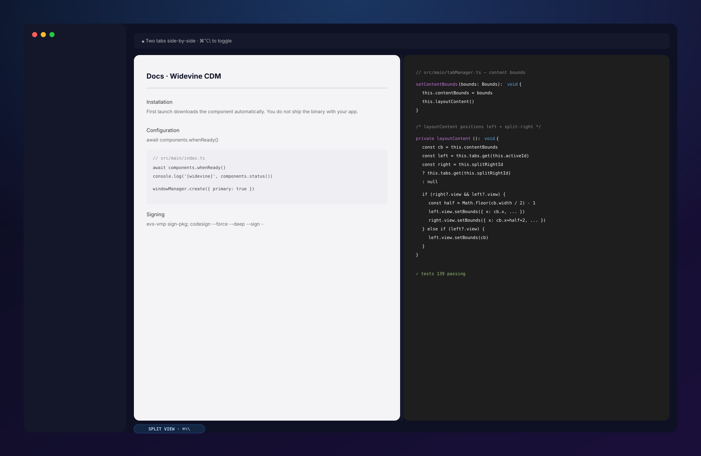
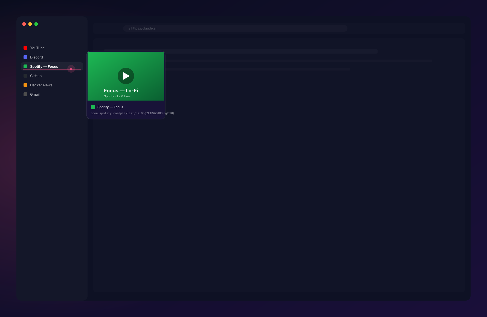

Ready to try?
One DMG, signed & notarized by Apple. Drag into Applications and launch — macOS handles the rest.
macOS 13 Ventura or newer
Apple Silicon + Intel
≈ 120 MB
Spaces, split view, per-site shield, live tab previews, and a fuzzy command palette that finds anything. Built on Chromium so every site just works. Native to macOS, made for your Mac.

Small things that add up — the difference between a Chromium reskin and a tool that feels like home.
Separate contexts for work, side projects, research, and the rabbit holes you're not proud of. Each space has its own color, icon, gradient theme, and auto-sleep policy. Switch with ⌘⌃1–6; drag pills to reorder.

Ghostery's filter lists running in-process at the network layer. EasyList + EasyPrivacy + Fanboy cookie banners. Per-site pause when a page needs it. A live counter in the toolbar shows what you're not loading.

⌘K opens a fuzzy search across actions, open tabs, history, bookmarks, and settings. Type a few letters — arrow keys navigate, Enter activates. No context switching, no menu hunting.

Pair any two tabs side-by-side with ⌘⌥\. Real split panes — each tab keeps its own page, its own audio, its own everything. Close one side and the other takes the full width again.

Every tab you've touched gets a live thumbnail. Hover in the sidebar, a card slides out with a fresh snapshot + title + URL. No more "which tab was that again?"

Nook is actively developed. Expect rough edges: occasional layout quirks, a feature that only half-works, a site that renders weirdly. The core browsing experience is solid, but if something breaks, please tell us on GitHub instead of uninstalling — every report makes the next build better.
Beta builds don't collect telemetry or usage data. Nothing leaves your Mac unless you ask it to — read the full security audit or skim the privacy page for the short version.
One DMG, signed & notarized by Apple. Drag into Applications and launch — macOS handles the rest.